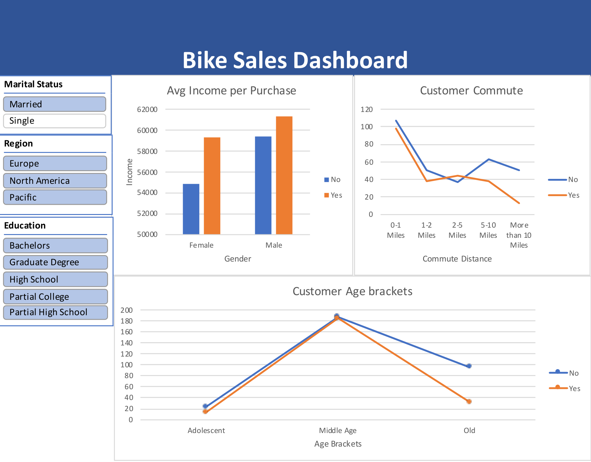

Projects
This portfolio includes selected projects in applied statistics, machine learning, data analytics, and computational research. These projects show how I have applied quantitative methods and programming to real-world problems in academic and professional settings.
Featured Projects

Accessibility
Web Summarizer
Dense web pages are often hard to scan. I built a Chrome-based summarizer that uses large language models to turn page content into a shorter, structured brief, and handled asynchronous requests between the browser and the model server. No user-study results are claimed. Research context.
View Project
Beck's Hybrids
Symposium
Corporate Partners project on which field and lab factors relate to seed quality and germination. I helped prepare the data in Python and SQL, used regression and ANOVA (including defoliation and moisture), and presented at the 2024 symposium. Research · Symposium PDF.
View Project
Titanic Analysis
(SAS)
End-to-end Base SAS pipeline on the Titanic passenger file (891 × 12): import, clean, reshape, and report, using DATA step and PROC SQL in parallel. The write-up documents formats, BY-group processing, TRANSPOSE, and PROC PRINT output.
View ProjectAdditional Projects

Bike Sales
Performance
Excel dashboard using formulas and PivotTables to track sales performance indicators and customer demographics. A public interactive demo is not posted.
View ProjectCollege Tuition
Analysis
Tableau workbook relating U.S. tuition levels to income and to early- and mid-career pay, with filters by state and related student characteristics.
View DashboardStarbucks Drinks
& Store Locations
Interactive Tableau dashboard of drink nutrition attributes and geographic store locations.
View DashboardMotion Detection
& Localization
Course laboratory: capture frames from a microcontroller camera, then use background subtraction and a grid rule to mark where motion appears. Source code is not public.
View ProjectMajor & Salary
Exploratory Analysis
Exploratory analysis of college-graduate data on majors, employment, and salary patterns using Python, Pandas, and Seaborn.
View Code on Kaggle